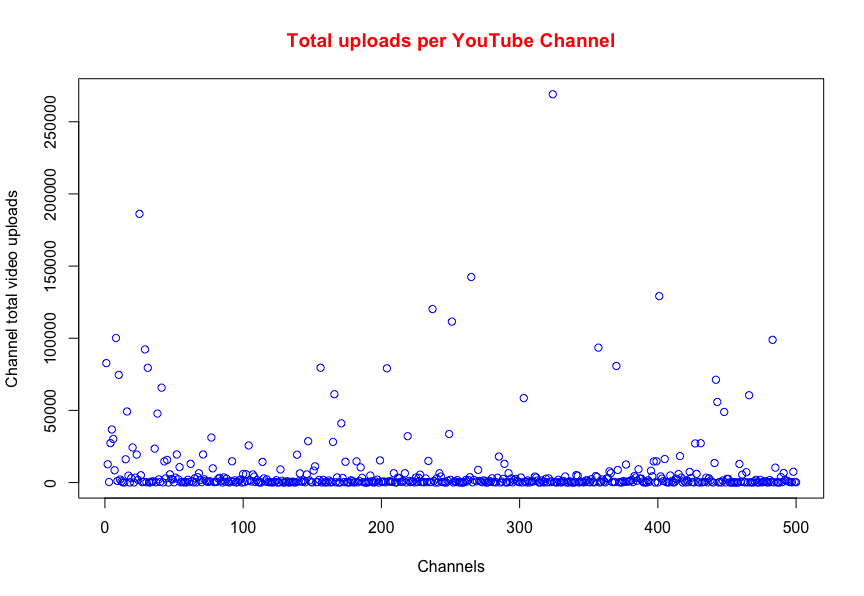

Top 500 YouTube Channels Statistics
Welcome to my website, analysing data of YouTube
MAT 327
Statistical Inference
THE DATA
"The dataset contains the top 500 rankings of the YouTube channels by a company named Socialblade. The data contains various information on the YouTube channels such as: the Socialblade channel rankings, the grades granted by Socialblade, the YouTube channel name, the number of videos uploaded by the channel, total number of subscribers on the channel and the total number of views on all the video content by the channel." -Kaggle.com
Mean
-
Video views:
3870224988 -
Subscribers:
7529789 -
Video uploads:
7555.936
Standart Deviation:
-
 Video views:
Video views:
4637487765 -
Subscribers:
7323683 -
Video uploads
23255.81
Video Views
Video Uploads

Subscribers
QUESTIONS
-
 1.
1.
Does more videos published means more views? -
2.
Does more videos published means more subcribers? -
3.
Does the increase in views increase subcriptions? how much? -
4.
Is the highest rated youtube channel the more popular in views and subscribers? -
5.
Why channels with few videos are so popular?